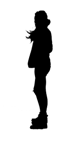
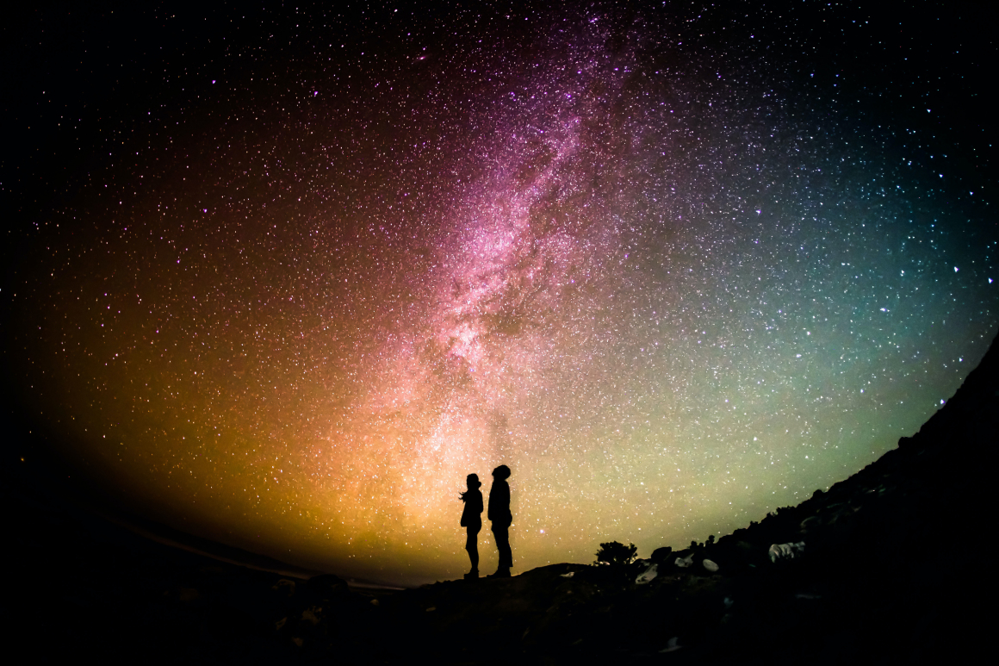
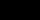
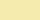
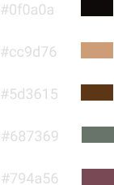
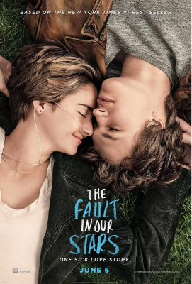
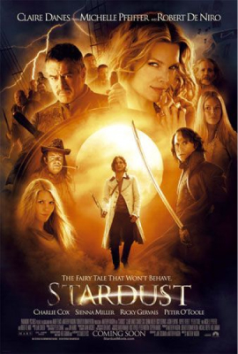
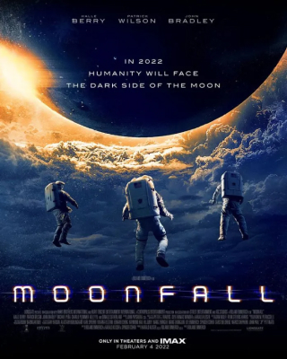

Cartaz - Reencontro nas Estrelas

O resultado final também pode ser visto no site: Canva.com
O Projeto
O cartaz foi desenvolvido no formato A3, 42x30cm, com a temática da divulgação de um filme de romance fictício, que ainda não tem data de estreia.
A Imagem de fundo, foi desenvolvida a partir de duas imagens, que foram alteradas via Photoshop.
Na segunda imagem, foi retirado o fundo e colocado um filtro, para transformar a mulher em uma sombra.
Finalmente, a sombra da mulher, foi incluída na primeira imagem, junto com o homem.
No Site Canva.com foi criado um Cartaz, com a imagem acima, recortada, com foco nas pessoas e no céu.
A tipografia escolhida para o título foi a Caveat, com a cor preto #000000. A razão dessa escolha foi o fato do título estar localizado exatamente no meio do céu, que tem um tom de amarelo predominante, logo, para manter um bom contraste. Já a razão da escolha da letra, foi a sensação de ser escrita a mão, dando proximidade para o espectador ao casal. O Slogan também foi pensado na mesma linha de pensamento.
Para letras que estão nas bordas do cartaz, a letra Montserrat, foi escolhida, pois promove boa leitura e sua cor, amarelo #F4EBAE, tem um bom contraste, pois se localizam em locais escuros do cartaz.
Resumo das Características do Cartaz
Tamanho de folha: Cartaz A3: 42x30cm
Tipografia
Título
Cor: #000000
Tipografia: Caveat
Tamanho: 120
Subtítulo (slogan):
Cor: #000000
Tipografia: Caveat
Tamanho: 36
Nomes dos atores (superior do cartaz):
Cor: #f4ebae
Tipografia: Montserrat
Tamanho: 18
Aviso (Inferior do cartaz):
Cor: #f4ebae
Tipografia: Montserrat
Tamanho: 18
Nome do Diretor:
Cor: #000000
Tipografia: Montserrat
Tamanho: 18
Cores predominantes na Imagem:
Inspirações
Para o desenvolvimento do cartaz foram utilizadas referências de cartazes de alguns filmes, citados abaixo:
A Culpa é das Estrelas
Fonte: Revista Quem
Stardust - O Mistério da Estrela
Fonte:Adoro Cinema
Moonfall
Fonte:Estação Nerd
A inspiração de “A culpa é das estrelas” veio da escolha de tipografia, que mantém esse ar intimista e proximidade ao casal. De “Stardust”, a predominância de cores e de “Moonfall”, o céu como um grande plano de fundo.

Conclusão
Com a execução desta atividade, pode-se provar que o CANVA é uma ótima ferramenta de criação, sendo extremamente fácil e intuitiva de usar e o melhor de tudo, gratuita. Com a pesquisa de algumas referências, pode-se desenvolver um cartaz coerente com sua temática e informativo, por isso também acentuo a questão da pesquisa de boas referências no desenvolvimento de qualquer projeto.